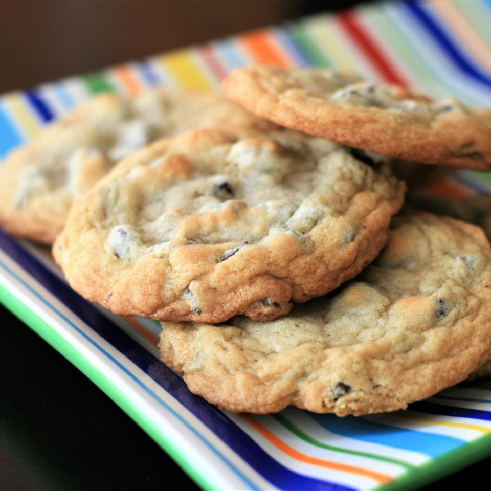

Crisp edges, chewy middles.
First
Preheat oven to 350 degrees F (175 degrees C).
Then
Cream together the butter, white sugar, and brown sugar until smooth. Beat in the eggs one at a time, then stir in the vanilla. Dissolve baking soda in hot water. Add to batter along with salt. Stir in flour, chocolate chips, and nuts. Drop by large spoonfuls onto ungreased pans.
Lastly
Bake for about 10 minutes in the preheated oven, or until edges are nicely browned.